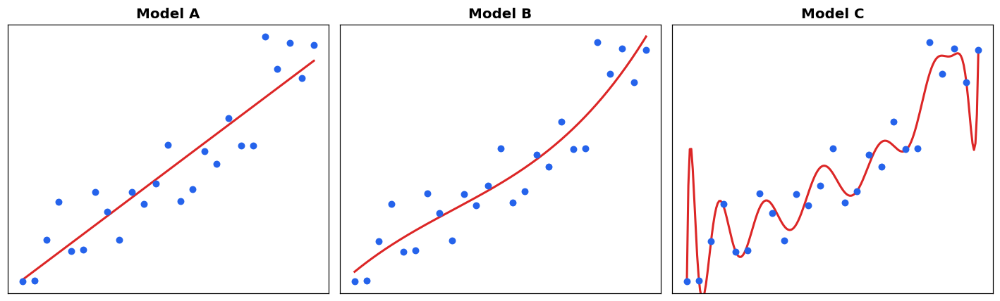
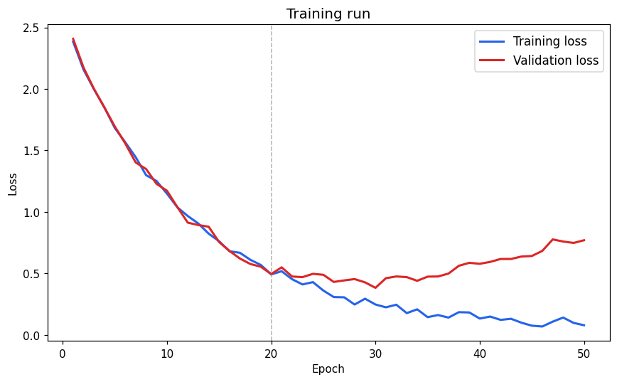
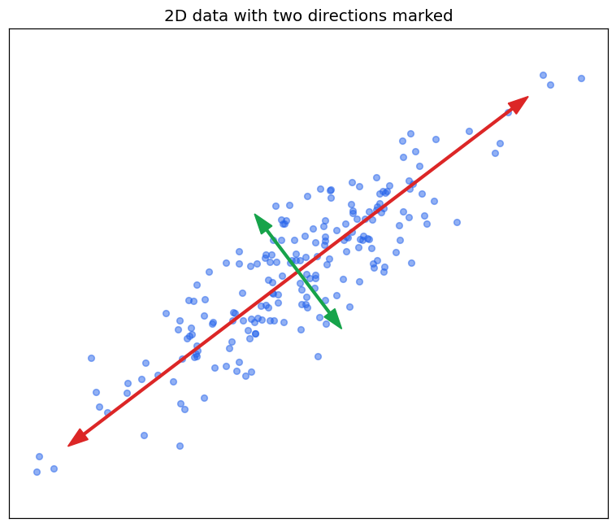
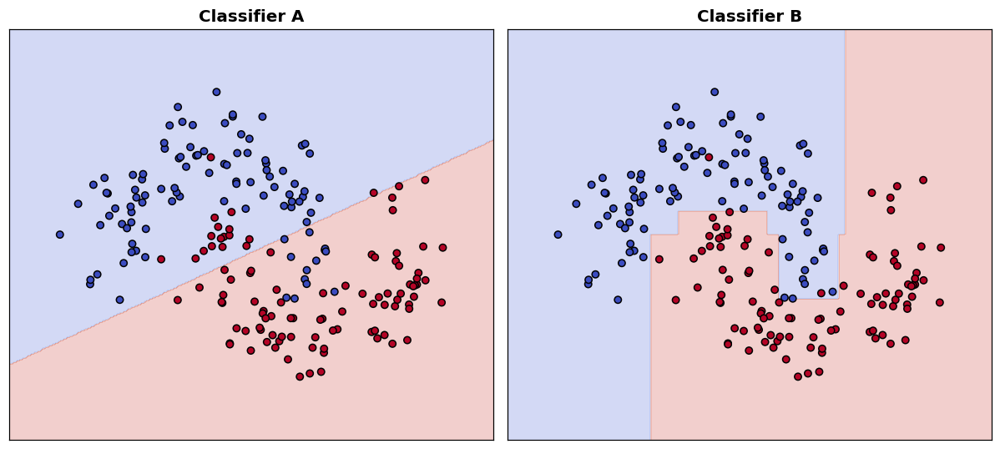

4Neural Network Foundations & CNNs
Pasting isn't allowed here — please type your answer.
Pasting isn't allowed here — please type your answer.
Pasting isn't allowed here — please type your answer.
Pasting isn't allowed here — please type your answer.
# example training config
learning_rate: 0.001
batch_size: 32
num_epochs: 50
weight_decay: 0.0001
optimizer: adam
Pasting isn't allowed here — please type your answer.
5Cross-Topic Connectors
These need two earlier topics understood together, not separately. A hint is included to point you toward the right way to think about it — not to give away the answer.
Hint: think about what changes about the kinds of decision boundaries the model can now draw — is it still restricted to a straight line/plane, or not?
Pasting isn't allowed here — please type your answer.
Hint: think about what "overfitting" actually looks like for a single tree — does every tree overfit in the exact same way, or differently each time? What happens to differing mistakes when you average them?
Pasting isn't allowed here — please type your answer.
6Image-Based Questions
Look at each image carefully before answering — the answer should reference what you actually see.

Pasting isn't allowed here — please type your answer.

Pasting isn't allowed here — please type your answer.

Pasting isn't allowed here — please type your answer.

Pasting isn't allowed here — please type your answer.